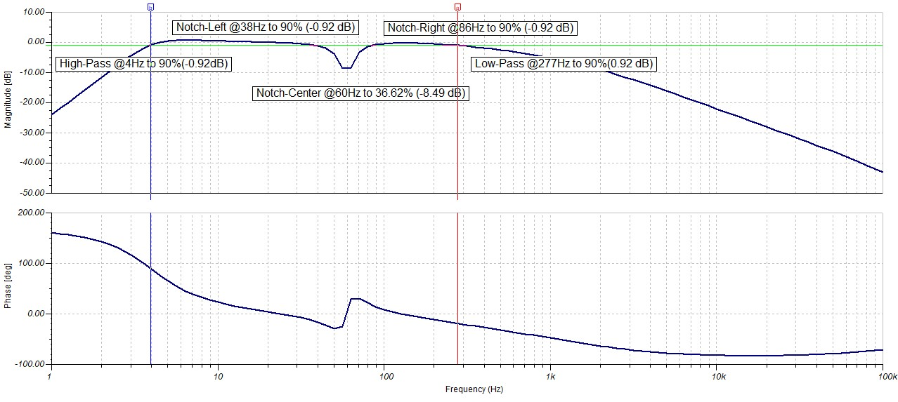

Co-Designers: Matt (Mbutton-umich), Ernesto (ernestogomezs), Pablo (pgaracu), Sammy (GitHub), and Youssouf (GitHub)
Welcome to My GitHub Pages!
What is FlexGlO?
Imagine a shirt that transforms your body into a living canvas of motion and energy. This isn't just a garment—it's a gateway to visualizing the power within. Using cutting-edge EMG (electromyography) sensors strategically placed across key upper-body muscle groups, this innovative shirt detects even the subtlest electrical signals generated by muscle activation. The result? A spectacular symphony of light, brought to life by vibrant LEDs, dynamically illuminating your movements in real-time. Witness the light of your own heart pulse on your chest, captured via EKG (electrocardiogram).

Fig. I: FlexGlO in Action.
Why FlexGlO?
Are you cheating on your curls? Now we can see that you are. Quantify muscle imbalances or movement weaknesses as 5 BLE nodes collect data across the body for rehab or performance purposes. Fitness analytics at the speed of light. Are you giving maximum effort in every rep? Simply glance at your mobile device to see the voltage output and muscle activity in real-time.
Features
- Precision EMG Monitoring: Sense the electrical activity of your biceps, triceps, pectorals, deltoids, and more, translating your strength into a visual spectacle.
- Precision EKG Monitoring: View the beating of your own heart as you proceed with your workout.
- Dynamic Illumination: LED strips glow and shift in intensity, providing an electrifying display of muscle engagement that mirrors your every move.
- Seamless Integration: Lightweight, flexible design ensures complete freedom of movement, whether you’re powering through a workout or performing on stage.
- Washable and Durable Construction: Features 5 removable BLE nodes for effortless cleaning and maintenance.
- Customizable Visuals: Choose from color gradients, patterns, or animations to suit your preferences and mood.
STRENGTH
ILLUMINATED
Fig. II: FlexGlO Muscle Shirt in Action.
Implementation Details
Sales speak aside we developed this "muscle shirt" over the course of three months and kept our budget to under $1000.00. In this general summary we bolded some key terms if you are interested in tackling similar challenges or projects with similar components.Aquiring muscle signals for EMG and EKG is done using Analog Devices AD623 a moderately priced chip that works well for breadboarding because it still comes in a DIP package. The single-supply analog filters all utilize TLV246X chips from Texas Instruments (TI) which again come in DIP packages and are well supported by TI's simple SPICE simulator and filter design widget. We selected ESP32-S3 WROOM 1 as the platform for the project for several reasons: the module's integrated antenna, the dual core, and its support and ubiquity amongst hobbyists. All of the code was developed in Arduino IDE in embedded C utilizing FreeRTOS and hardware timers for strict scheduling. The system is powered with a generic 3.7V 850mAh Li-Po pouch and regulated with TI's TLV1117LV33 to 3.3V at 1A. The eventual PCBs were created in KiCad. We use multi-channel continuous reads over DMA (direct memory access) to sample up to three muscles at once at every node. That information is then aggregated and processed quickly to be displayed in realtime with quick updates to WS2813 LED strips using the FastLED library. We also quickly send updates to a Flutter mobile application from all five nodes across the upper body. This app allows users to view muscle activation across the whole upper body, or to zoom in and see a live oscilloscope-style view of any particular muscle. From the app, you can also change the LED colors or log data for later analysis. At the tail end of the project, we also tried to do some movement identification once data is collected at the app in Dart using some binary matrix manipulations.
Analog Acquisition
We use an Analog Devices instrumentation amplifier AD623 as the pre-Amp phase to extract muscle signals off of the surface of the skin. As you flex a given muscle neurons are firing a ripple of activation signals along the muscle fibers that propogate out to the surface of the skin. With a high impedance differential amplifier we can measure the differnce in voltage between two close points and quantify that activation energy. Under the shirt, users need to put roughly 30 Red Dot Electrodes that button nicely into our electrode snaps and feed into each node via 2.5 mm TRRS (AUX) jacks. It took a lot of testing to select the correct gain resistor for EMG and EKG. We initially used a potentiometer to dial in the correct gain for our purposes; unfortunately, we found the resistance on the breadboard to be pretty finicky and unstable. For the PCB, we landed on 300Ω for the EMG and 100Ω for the EKG circuit. These minscule muscle activation signals are in the range [50μV, 30mV] for EMG and [500μV, 5mV] for EKG. We needed strike a balance and select a gain that is large enough to bring these voltages into the full range of our ADC ([0, 3.3]V) but not so large that upon activation we get instant saturation. From the AD623 datasheet that places our selected gains at:
From the jump, we also wanted to avoid the dual-supply setup we saw on a lot of online EXG tutorials. So we used a voltage divider at the reference pin to bump negative muscle signals into the [0, 3.3]V range within the rails. For the entire analog design process, we relied heavily on TI's Filter Design Tool and made sure to scale things to the most common ceramic capacitor and resistor sizes where possible.
There were also three other TI "Application Reports" that were super helpful especially the last one which explicitly shows how to modify things for single-supply:
After the instrumentation amp the boosted signal proceeds through a series of filter stages. For the EMG we use a Sallen-Key Low Pass followed by a Sallen-Key High Pass filter to create a bandpass and extract relevant EMG frequencies in the range [5, 500]Hz. After the bandpass the the final stage is a two amp Fleige Notch Filter to remove 60Hz interference which was very prevalent in the lab where we did most of our testing. The EMG filter architecture is shown below using a rail-to-rail quad-amp TLV2464 IC from TI (and the EKG schematic is in the Git):
Fig. V: The EMG filter schematic.
The EKG circuit is similar to the EMG with just changes to the electrode placement and the filter passives to bring the frequency range within [0.2, 200]Hz. After their conception, we used TINA (TI's Interactive Network Analyze) to simulate both the EKG and EMG circuits. To the right is an ad-hoc sweep of the EMG filter to make sure the bandpass cutoffs are about right. TINA was pretty useful because we had at least some assurance that the circuit would work before ever ordering parts. We also got a nice frequency response plot of the circuit. In simulation for example, we could tune the depth and width of the 60Hz notch by playing with the values of the R_M_O# pair of resistors in the schematic. 
Fig. IV: [Right] TINA Simulator Oscilloscope showing the response of the full EMG filter at different frequencies.
[Bottom] Bode Plot of showing filter magnitude and phase.
After all that simulation we purchased through-hole parts to build the circuit in breadboard form. For uniformity we stuck with Yageo for resitors and Kemet for capacitors maintaining ≤5% tolerances to keep the circuit realization close to the simulations. The EMG breadboard worked without issue despite the tangled mess of the Notch filter on the small breadboard.
However our EKG proved more challenging as the signal was very weak when we used the canonical three-lead electrode placement from SENIAM (Surface ElectroMyoGraphy for the Non-Invasive Assessment of Muscles). At maximum gain the heartbeat was still almost too faint to be recognized by the ADC. Also moving your leg, breathing, or flexing your chest would drag the signal all around. A great link: Guide to Understanding ECG Artifact, allowed us to understand we were witnessing a "wandering baseline". To remedy this issue we changed from a bandpass and notch combination to a lone narrow bandpass in the range [0.25, 25]Hz. We also experimented with alternative electrode placement to obtain a stronger heartbeat signal. After trying a F-EKG three-lead constellation with placement on the sternum and lower left rib we had better results. This electrode constellation captures the "ε-Wave" as opposed to the "R-Wave" and it just worked better for our purposes of capturing a BPM.


Fig. VI: [Left] EMG analog test with LED output. [Center] EMG I-Amp and Filter Breadboard. [Right] EKG analog test with LED output.
Digital Sampling and Conditioning
Fig. X: Block diagram of muscle signal sampling and conditioning.
After all the hard work aquiring and cleaning the muscle signals we eventually pass them through the ESP32-S3's ADC and into the digital domain. Recall that each node has at most three muscles (EMG0, EMG1, and EKG), so initally we were doing single shot conversions for three channels. Also recall that EMG is in the range [5, 500]Hz so we wanted to sample above the Nyquist rate of 1kHz. As we got closer to 1kHz we found the CPU was overwhelmed with all of the interrupts for sampling all three channels. To reduce the load on the CPU we instead switched to a continuous sampling of three channels over DMA. Although there was example code for continous sampling on a single channel of the ESP32 ADC there was less support for multi-channel sampling via DMA. Fortunately the Expressif documentation was decently clear and after a small struggle we were able to configure the DMA appropriotely. The sampling and signal conditioning process largely follows the block diagram to the left:
Everything occurs sequentially on Core 1: DMA fills its buffer which releases the process_ADC FreeRTOS task. After process_ADC finishes the process_LEDs task is released and will display our most recently measured values via the LEDs. And to be clear when I say "released" I mean we use defferred interrupt handling. So a quick interrupt sets a flag that unblocks a task or I explcitly release a task which in FreeRTOS-speak means using xTaskNotifyGive(...).
A few more notes on design decisions. We had to rectify digitally because we made our analog front end single-supply. Normally, with a zero centered signal we could just add a diode bridge at the end of the filters and an RC smoother to rectify the signal. However, with the 1.65V offset single-supply signal we just flip the lower values coming off the ADC. This way we can get a kind of absolute value for muscle activity which is translated into levels once given to the process_LEDs task.
It's also worth noting everything about the conditioning pipeline is parameterized. We experimented with different DMA buffer sizes and the subsequent median filter window lengths. Again from testing we had to strike a balance: if the filter window is too long we flatten away brief moments of muscular exertion and its difficult to max out the LED bar; if we make it too short we don't smooth out the divots from rectification and the LEDs look very flickery and faint. Also if you make the buffer too big we produce a median at a rate below the Nyquist and allias effects take hold. In the end we selected a window of size 8 at 8kHz DMA. Before switching to DMA we had actually used a moving average filter but with the DMA setup we are collecting data in bunches of full buffers so the median filter (which was more robust against occasional noisy outliers) was a better choice for a similar computational cost. Finally, the Arduino serial plotter was a particularly useful tool for debugging all of this ADC code. We could visually inspect how the signals are sampling and rectifying and averaging to make judgments about the qaulity of our signal chain. Although at high sampling frequencies the Serial.print(...) would lag or crash it was a heavily leveraged asset.
Fig. V: Arduino Serial Plotter showing rectification of a 20mV signal at 32Hz.
Fiber Optics...Muscle Fiber Optics
We are fully indebted to the FastLED library, which allows us to update the LED bars and the LED circle for the heart pulse. There were basically no problems with the library, and the interfaces are very clean. The only hiccup involved multiple tasks contending for control of RMT assets. In prior projects, we had bit-banged the data lines for these strips, but we were fortunate that FastLED does this and does it efficiently. For the bars, we simply range down the median coming off the ADC and ignite that number of LEDs. For the EKG circle, the actual heart pulse was too quick and looked very faint, so we used some software tricks to give a "stickiness" to the heartbeat to make it more prominent. FastLED uses the RMT (Remote Control Transceiver) peripherals to bit-bang the precise PWM patterns and encode colors to the strips. The ESP32-S3 has 4 transmission RMT channels, so the three strips compute the colors and levels serially and then update in parallel.
We also made a nice "start-up pulse" animation (in maize and blue) and a "waiting to connect" animation. Although we developed these initially as flair for the system, they were actually incredibly useful. When debugging, the chip might crash or disconnect, and having those visual cues was a big help.
For the final system on the PCB, we also measured the FPS (frames per second) for all the LEDs updating. We fall within [110, 150] FPS for regular operation. We selected WS2813 strips in particular for several reasons:
- The dual redundant data lines are good if a cable breaks during regular exercise.
- The refresh rate is limited by the 280 ns reset time, allowing faster strip updates over the cheaper WS2812B variety.
- For small strips, the 5V source voltage can be satisfied with only 3.3V.
That last point was a particular concern for us because we are running the sensor nodes off of a 3.7V lithium battery and stepping things down further via an LDO to 3.3V. We probably should have included a level shifter, but it would have taken up space on our board. Luckily, after testing on the development breadboard, even the 12 LED circle strip lit up without turning red or fading at only 3.3V.


Fig. VIII: [Left] PCB outputting random voltages from thumb. [Center] Development breadboard showing smooth level transition with potentiometer. [Right] Startup and wait animations.
Power Considerations
Because of how the analog, the code, and the BLE was developed concurrently it was somewhat difficult to ascertain the peak current draw of the full system until we received the PCB. First we did some napkin math:
At "full-white" the addressable RGB LEDs require 60mA of current (20mA for each R-G-B). We have \(10+10+12 = 32 \) LEDs. We wanted to try to keep to a single color channel and after testing decided that 75% brightness was suitable for our purposes. So \(32(1mA+1mA+20mA)(75\%)=528mA\). We also have three instrumentation amps and the filter amps to accompany them; from the breadboard we measured the draw on those to be \(\leq 20mA\). Finally considering the ESP32-S3 current draw: The ESP Hardware Design Guidelines recommends a 500mA LDO to support the device. The datasheet also gives the consumption for "Active RF" as 340mA and 110mA for a "CPU at full-load". Combining all of these estimates together and we obtain: \(528mA+20mA+340mA+120mA=998mA\). This was our inital conservative estimate for system current draw and if we had somehow miscalculated we could have lowered the LED brightness further.
Fig. IX: The nice E-Switch toggle to handle 1A
We also wanted the system to last at least 1 hour (a time chunk long enough for a reasonable workout). Filtering through battery options that had a small (wearable) form factor, were 3.7 volts, and close to 1Ah in capacity we eventually landed on a 3.7V lithium-ion battery with 850mAh and an dimensions 43.0mm x 34.0mm x 6.2mm. We also found a Low-Dropout Linear Regulator (LDO) from TI that could step the 3.7 down to 3.3 to power everything on the board the TLV1117LV33 (which can provide up to that peak 1A). It was suprisingly difficult to find a small and inexpensive on/off switch that could handle a full 1A. It seemed that slider swtiches are usually under 500mA, and most rockers were too big. Fortunately we found a toggle switch 200MSP1T2B4M2QE by E-Swtich that has a satisfying click.
After about 10 days the PCB arrived. There was one mistake involving the power switch, where the off pin was tied into the ground net so the battery was shorted when turned off. Fortunately we powered everything with a lab supply unit and corrected this issue by clipping the third pin of the switch. We also discovered the actual current draw of the system was much lower than expected at <250mA. This was a great result for our battery life which we eventually tested to exceed 3 hours for each sensor node.
The PCB
The PCB(printed circuit board) was created in KiCAD and the schematic is based on the development breadboard we built with through-hole parts. We chose a 4 layer design so we had easy access to power and ground planes with vias. The board has a diameter of 60mm athough our edge cut does have a 1mm margin so we could potentially bring this design to 58mm. Through the entire PCB design process we tried to keep things as tight as possible to create sensor nodes that are actually wearable and do not incumber fitness movments while the system is in use. Initially we wanted the LED strips to encircle the "hockey puck" housing. There are two LED strips per node each of length 70 mm, and with a diameter of 60mm that means we have a circumference of \( 2\pi \left(\frac{60mm}{2}\right)=188.49mm \). The BLE antenna has a no-go zone that blocks the top flat portion of the board leaving us only about 140mm remaining for both the 2.5mm AUX jacks and the LEDs. Later on, during the design of the shirt we realized we could make the LEDs removeable from the housing and veclro them to the shirt. This second setup would allow us to shrink the board further. We also considered a double-sided board flipping all the amps to the backside, but the assembly cost ended up prohibitively high. The boards also include eleven probe locations we used to confirm proper analog performance of the board that could preseumably be sliced away to further shrink board area.
Fig. X: [TOP LEFT CLOCKWISE] The four layers of the FlexGlO PCB.
All of the ICs on the board are installed with the default decoupling and stabilizing capacitors. To keep the design compact all of the passive components were selected to be in the 0402 package with the exception of a few 1206 tantalum capacitors. We orded the PCB to be partially assembled from JLPCB. This meant altering some of the BOM (bill of materials) to include parts within JLPCB's basic library offering to keep assembly and production costs low. Ordering partially assembled from JLPCB was a unique challenge becuase occasionally (for example for the AD623) a part would be significantly cheaper [we assume because JLPCB buys at volume and has a fraction availalbe as surplus for hobbiests], but we would have to pay a $3.00 "reel-swap" cost because it was on their "extended parts list". For the filters, often times a slightly more common resistor value might be on the basic list and we ran simulations on resistor and capacitor alterations to assure the PCB kept to the perfomance of the breadboarded design. As another benefit of partial assembly the ESP32-S3 itself has an under-module ground spot that would have required a hotplate setup to assemble ourselves so we were fortunate to have JLPCB carry that part in stock. The power switch, electrode TRRS jacks, and the TI filter amplifiers were not available on JLPCB and we had to solder them outselves. The only downside to the partial assembly was the gain resistors. Recall from the analog secion that selecting the correct gain was finicky on the breadboard and removing and resoldring a miniscule 0402 resistor on the edge of a board would have been a pain had we chosen poorly.
Routing was particularly difficult for the notch and bandpasss filters where there are numerous looping interconnects between the SOIC-8 pins of the TI amplifiers. At the point of PCB design we were still relatively unsure of the current requirments for our system so we select 0.75mm traces for 3.7V off-battery, 0.5mm traces for the LED strip power and the ESP, and 0.25mm traces for the remaining nest. There are a few spidering traces within the power and ground planes that are voltage referecnes for the filter and the instrumentation amplifiers respectively. There is a circular cut-out in the lower right side of the board to route power cables and the LED wires through the housing.
Fig. II: [Left] FlexGlO PCB top-view 3D rendering. [Center] Busy KiCad PCB design overall view. [Right] FlexGlO PCB side-view 3D rendering.